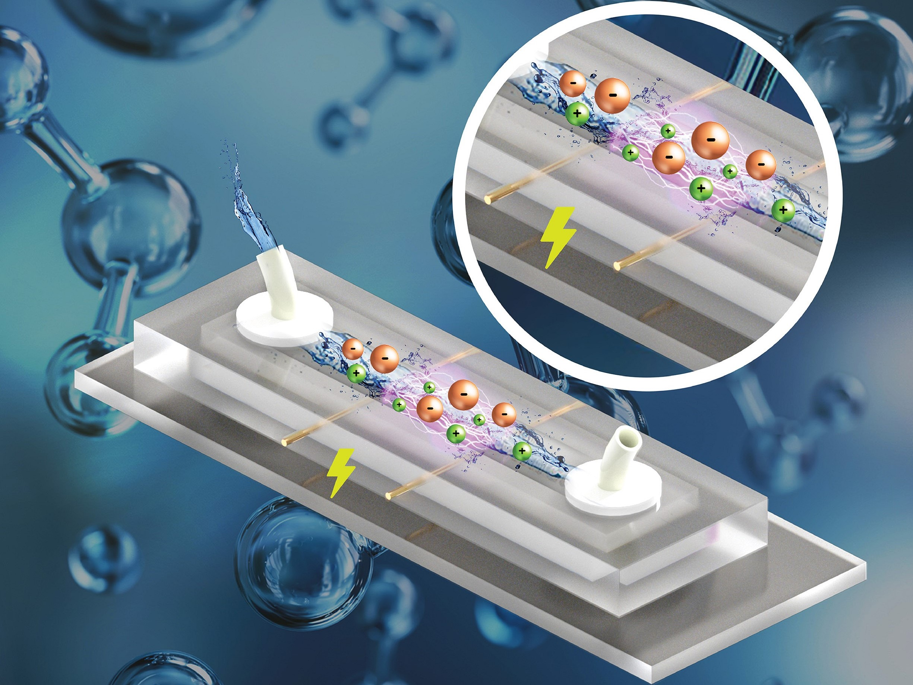

Data acquisition software was developed based on MATLAB to record sensor's electrical signals,
then the recorded data were cleaned and outliers were filtered. Next, the data were visualised,
statistical analysis was performed, and contamination in drinking water was measured. Based on the acquired
data, a statistical optimization with full factorial study was performed to increase sensor sensitivity and dynamic range.
Published Work in Peer-Reviewed Scientific Journal.

The theory of Deterministic Lateral Displacement was presented for passive sorting and separation of particles
using geometrical and hydrological features of channels.It soon became very attractive but the theory
assumed unlimited boundaries of devices which
is not practical in real life. In this project, we developed computational models to simulate numerous conditions
to find the most optimum sorting condition and presented two equations that make it possible for DLD to be
efficiently used in real life. The paradigm presented was named "The Boundary Correction Paradigm (BCP)"
Published Work in Peer-Reviewed Scientific Journal.

Sensing ultra-low levels of toxic chemicals such as H2S is crucial for many technological applications.
In this report, employing density functional theory (DFT) calculations, we shed light on the underlying physical phenomena
involved in the adsorption and sensing of the H2S molecule on both pristine and strained single-layer molybdenum disulfide (SL-MoS2)
substrates. We demonstrate that the H2S molecule is physisorbed on SL-MoS2 for all values of strain, i.e. from −8% to +8%, with
a modest electron transfer, ranging from 0.023e− to 0.062e−, from the molecule to the SL-MoS2.
Published Work in Peer-Reviewed Scientific Journal.

In this project, we worked on the design and implementation of a new algorithm for the two dimensional (2D) simulation
of rigid spherical particles trajectory which are to be separated in a microfluidics device based on their sizes.
The advantages of efficient particle trajectory simulation method (EPTSM) include drastically smaller runtimes as
compared with other methods as well as the ability to include particle collisions with channel’s walls and its ability
to be extended to 3D simulations.
Published Work in Peer-Reviewed Scientific Journal.

Low-cost, swift and reliable DNA sequencing, if achieved, is expected to set the stage for accessible personal medicine
and there is an ongoing quest to leverage two-dimensional (2D) materials for the realization of single-molecule-precision DNA sequencing.
Towards this, in this project, we reported a comparative van der Waals density functional theory (vdW-DFT) investigation on the adsorption characteristics
of one mutated, two methylated, and four canonical DNA nucleobases on single-layer molybdenum disulfide (SL-MoS2) and tungsten disulfide (SL-WS2) substrates.
Published Work in Peer-Reviewed Scientific Journal.
In this project, we will use Artificial Neural Networks (ANN) and Keras API of Tensorflowtry to create a model
based on our historical data from the customers to answer a question. Can we build a model that
can predict wether or not a borrower will pay back their loan? Answering this question, we can predict and assess whether
or not a new potential will pay back the loan. These machine learning models are crucial in predicting and analysis of
the financial risk for every financial institute. After exploring and visualising
the dataset from a financial institution
(LendingClub), we have created, trained, and tested a model with Sequential Artificial Neural Networks with dense
layers with input, hidden, hidden, and output layers with 78, 39, 19, and 1 nodes, respectively. The model f1-score was
evaluated to be 0.89.
Mortalities due to heart diseases are the first cause of death worldwide. Thereby, early diagnosis or prediction
of the disease in patients plays an important role in imporving public health and saving lives and families.
In this project, we will try to use multiple data entries from
patients to train and test a model that could predict heart diseases, minimizing the false negatives (FNs).
After through exploration of the datasets on patients' conditions, we have developed, trained, and tested Logistic Regression
Machine Learning Method to predict patients who have heart disease. We have investigated different fold values to obtain
the least value of FNs. Fold value of 3 was chosen to obtan ~1% FNs and f1-score of 0.86.

In this project, a python package is developed for calculation of probabillity density function
in Gaussian and Bionomial distributions as well as plotting, and summation of them.
The package can be readily installed using pip installer.
There are two main classes that can be used by the user, Gaussian and Binomial.
Gaussain class can take either the data list or the mean and standard deviation of the data directly. The binomial class takes
either the data list or probability and size as it's input arguments.
The user can calculate average and standard deviation of the data or the probability density function at any point.
The user can also plot the histogram of the distributions. Besides, the user can define two separate distributions
and add them together as if they are regular numbers.
In this project, we will use machine learning to create a model that is capable of determining if a bank note is authentic or fake.
We used a dataset that consisted infomation on the image properties taken from the notes like Wavelet Transformed image's variance, curtosis, skewness
as well as image entropy. Random Forest Classifier was used in the model. The model was developed, trained and tested and
a f1-score of 0.99 was obtained.
In this project, we assumed that we were given a classified data set and we used K-Nearest
Neighbors method of supervised learning to create and train a model.
The best k-value that would give lowest error was identified and the model was evaluated based on the k-value found.
The model demonstrated an f1-score of 0.86 in the evaluation step of the model.
Natural Language Processing (NLP) is used in this project to identify and classify customer reviews and ratings.
Each observation in this dataset is a review of a particular product by a particular user.
In this NLP project we classified Women's E-Commerce Clothing Reviews into
1 star or 5 star categories based off the text content in the reviews. We also utilized
the pipeline methods with Multinomial Naive Bayes. After dataset exploration, we developed and trained the model
and established an f1-score of 0.96.